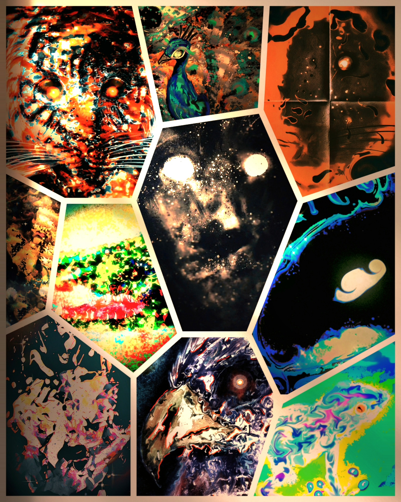

Toutes les images de la galerie sont protégées par des droits d'auteur ©️. Toute reproduction, distribution, modification ou utilisation de ces images sans autorisation préalable est strictement interdite.
Bienvenue sur la galerie d'art numérique interactive des **Animaux abstraits** ! Découvrez une série d'œuvres d'art d'animaux abstraits, créées avec passion par Ilyass Saouti. Artiste autodidacte, Ilyass met tout son cœur dans chaque création, cherchant à partager des émotions sincères avec ses spectateurs. En plus de son talent artistique, Ilyass est un créateur de contenu polyvalent qui aime se lancer des défis intellectuels. Toujours curieux et avide d'apprendre, il s'efforce de maîtriser de nouvelles compétences et de repousser ses limites. Il aime inspirer les gens à réaliser leurs rêves. Explorez la galerie d'art Abstract Animals et laissez-vous toucher par la simplicité et la beauté des œuvres d'Ilyass Saouti.
📋 Notice d'utilisation 🔍 Interagissez avec les images ! Cliquez dessus pour révéler / Cacher des informations 🖼️✨ Cliquez directement sur le bouton rouge pour explorer la série sans spoiler 🎨✨

Né en Belgique à Charleroi, Ilyass Saouti est un artiste autodidacte qui s’est autodiscipliné pour réaliser ses rêves. Son parcours est une véritable source d’inspiration, démontrant que la passion et la détermination peuvent transcender les limites. Plongez dans l’univers captivant d’Ilyass, où chaque création est une fusion harmonieuse de technologie et d’art. Utilisant une tablette graphique et des applications d’effets, Ilyass donne vie à des visions abstraites qui capturent l’essence des animaux de manière surprenante et unique. Chaque pièce est méticuleusement réalisée, transformant des concepts abstraits en expériences visuelles et émotionnelles profondes. Les œuvres d’Ilyass ne se contentent pas de représenter des formes, elles invitent les spectateurs à voir au-delà de l’apparence et à ressentir l’âme de chaque création. Venez découvrir ces œuvres exceptionnelles dans sa galerie d'art et laissez-vous emporter par l’émotion et la profondeur de chaque pièce. Une expérience artistique inoubliable vous attend.
En explorant cette galerie, vous découvrirez une série fascinante d’œuvres où l’abstraction et la nature se rencontrent de manière harmonieuse. Chaque visite promet une nouvelle expérience visuelle, où les couleurs vibrantes et les formes fluides se combinent pour créer des compositions captivantes. Les œuvres d’Ilyass sont plus qu’un simple plaisir pour les yeux; elles sont une invitation à plonger dans un univers où chaque détail est pensé avec soin et chaque coup de pinceau numérique est chargé de signification. Pour rendre votre visite encore plus interactive et ludique, Ilyass a également créé un jeu unique. Une œuvre représentant un animal abstrait est présentée, et votre défi est de deviner quel animal l’artiste a représenté. Ce jeu ajoute une dimension supplémentaire à votre expérience, vous invitant à observer attentivement et à interpréter les indices visuels pour découvrir les secrets cachés dans chaque œuvre. Plongez dans cet univers artistique et laissez-vous surprendre par la créativité et l’ingéniosité des œuvres d’Ilyass, tout en vous amusant avec le jeu interactif qu’il a conçu !
Chaque création est une œuvre unique, réalisée avec une attention minutieuse aux détails et une passion évidente. Grâce à l’utilisation de tablettes graphiques et d’applications d’effets modernes, les rendus sont tout simplement époustouflants. Chaque pièce est le résultat de nombreuses heures de travail, témoignant de la patience et du dévouement de l’artiste. Explorez cette galerie interactive et laissez-vous séduire par les animaux abstraits d’Ilyass Saouti. Chaque œuvre vous invite à découvrir un monde où l’abstraction et la réalité se rencontrent, offrant une perspective nouvelle sur la beauté de la nature. Pour rendre votre expérience encore plus immersive, Ilyass a composé la musique originale du site et a codé la galerie de A à Z, assurant ainsi une authenticité totale. Nous espérons que votre visite sera aussi inspirante que les œuvres elles-mêmes. Bonne exploration !